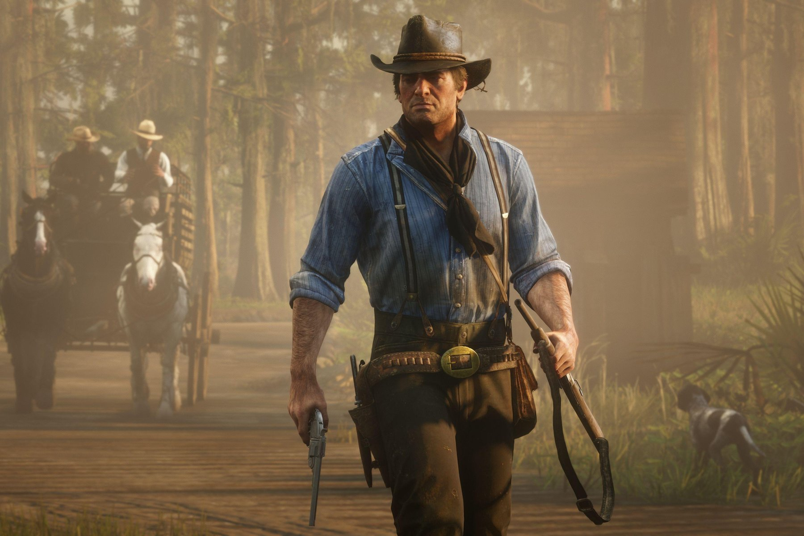
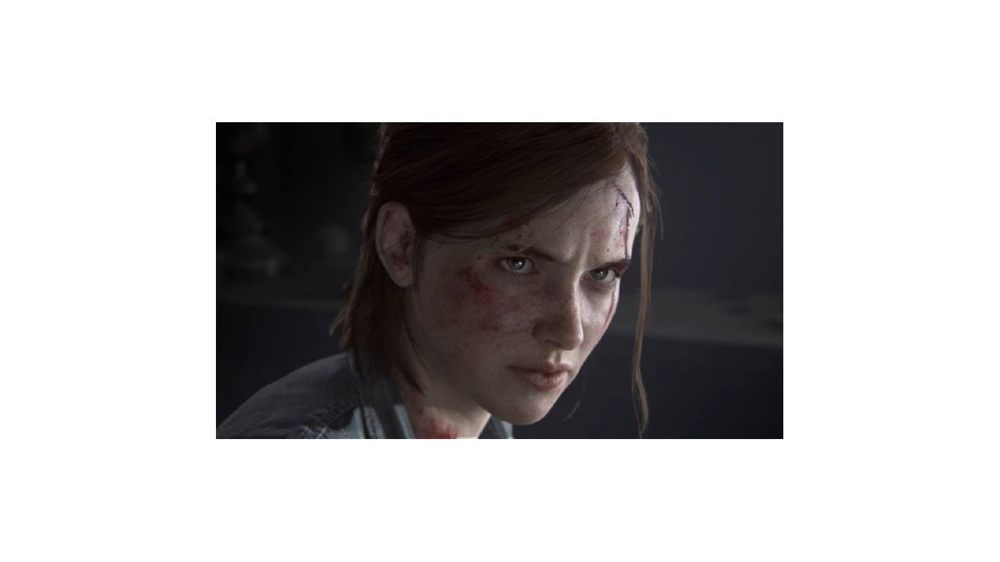

ARCHIVE / PREVIEWS
Cyberpunk 2077
The bold yellow image that led the original Super Review homepage. Revisit the preview concept from the 2018 project.
ARCHIVE EDITION / 2018–2019
THE SUPER REVIEW ARCHIVE
A look back at the games featured in the original preview collection.
ARCHIVE / PREVIEWS
The bold yellow image that led the original Super Review homepage. Revisit the preview concept from the 2018 project.

ARCHIVE / PREVIEWS
The original Red Dead Redemption 2 preview collection, presented as an archive gallery.

ARCHIVE / PREVIEWS
The Last of Us imagery from the original preview collection, kept in its historical context.
No matching stories. Try another game name or clear your search.